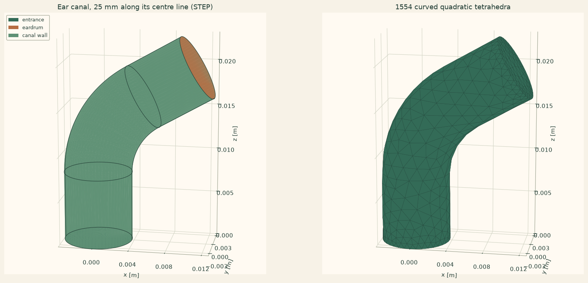

Docs › Examples › Ear canal acoustics
Pressure acoustics, frequency domain · 3D
Ear canal acoustics
The human ear canal - a bent tube 25 mm long closed by the eardrum - and the pressure gain it gives around 3-4 kHz.

What it computes
OneSimulation reads the canal, a circle swept along a bent centre line, from a STEP file and solves the Helmholtz equation with curved quadratic tetrahedra from 100 Hz to 10 kHz on two meshes; the entrance is driven by a uniform velocity and the eardrum is a mass-spring-damper impedance boundary. Input impedance and the gain from entrance to eardrum follow from the mean pressures on the two faces. The script that builds the STEP file comes with the notebook.
What it checks
Input impedance and gain follow the transmission-line model with a median deviation of 0.01 dB; the gain peaks at 25.1 dB within one step of the 1/26-octave grid of the line model (25.1 dB), and the largest deviations (0.9 dB in the gain, more in the input impedance at its sharp maximum near 7 kHz) sit on the steep flanks of resonances that the 60 degree bend shifts slightly.
Geometry
The notebook starts at the import of the CAD file ear_canal_transfer.step: STEP (AP242), readable by any CAD program, with the names of the faces that the boundary conditions use. Put it next to the notebook.

The geometry script
The script ear_canal_transfer_geometry.py builds the geometry with the CAD objects of OneSimulation and writes the file. Change a dimension there, run it, and run the notebook again.
"""Geometry of the OneSimulation example "Ear canal acoustics".
Builds the air of an ear canal with the CAD objects of OneSimulation: a circle of radius 3.75 mm
swept along a bent centre line - 13.5 mm straight, a 60 degree bend of radius 10 mm, then straight
on to the eardrum - 25 mm long in total. It writes ear_canal_transfer.step with the faces
entrance, eardrum and wall.
"""
import numpy as np
from onesim.cad.d2 import Path, Profile, Segment
from onesim.cad.d3 import Sweep
radius, bend, first, second = 0.00375, np.radians(60.0), 0.0135, 0.012575
corner = (0.0, 0.0, first)
end = (second * np.sin(bend), 0.0, first + second * np.cos(bend))
circle = Profile(
Path(
(radius, 0.0),
(
Segment((-radius, 0.0), center=(0.0, 0.0)),
Segment((radius, 0.0), center=(0.0, 0.0)),
),
)
)
canal = Sweep(profile=circle, path=((0.0, 0.0, 0.0), corner, end), corner_radius=0.010)
faces = canal.boundaries
canal.grouped(entrance=faces.start, eardrum=faces.end, wall=faces.side).save(
"ear_canal_transfer.step"
)The notebook
The complete notebook, cell by cell. Run it to produce the figures and the comparison printout.
The outer ear canal leads from the concha to the eardrum. It is about 25 mm long and 7.5 mm wide and bends on its way. Driven at the entrance, it resonates as a tube that is open at one end and nearly closed at the other, near \(c/(4L)\approx3.4\) kHz, and raises the sound pressure at the eardrum by 10-15 dB there (E. A. G. Shaw, J. Acoust. Soc. Am. 56, 1848, 1974).
Here the canal is a circular tube of radius 3.75 mm swept along a centre line with a 60° bend. The eardrum closes it as a locally reacting surface with a mass-spring-damper impedance, \(Z_d=\rho_0c\,[\,r+i\,x\,(f/f_d-f_d/f)\,]\) with \(r=2\), \(x=3\) and \(f_d=1.5\) kHz - a simple representative model; measured eardrum impedances (H. Hudde, J. Acoust. Soc. Am. 73, 242, 1983) have the same stiffness-controlled behaviour at low frequencies.
| boundary | condition | |---|---| | entrance | uniform normal velocity \(U\) into the canal | | eardrum | impedance, \(v_n=p/Z_d(\omega)\) | | canal wall | rigid, \(\partial p/\partial n=0\) |
Reference. Below the first cross mode of the canal (\(1.84\,c/(2\pi a)=27\) kHz) only plane waves propagate, and the canal is a transmission line of length \(L\) along its centre line (Kinsler et al., Fundamentals of Acoustics, 4th ed., §10.3):
The bend (radius 10 mm, almost three canal radii) changes the plane wave only slightly.
import numpy as np
from onesim.cad.exchange import load
from onesim.meshing import TetrahedralMesher
from onesim.numerics.fem import FiniteElement, Lagrange
from onesim.physics.acoustics import (
AcousticHarmonicPressure,
ComplexPressurePencil,
ConstantPressureForms,
PressureAdmittanceBoundary,
PressureTraceSamples,
SampledPressureAdmittanceForms,
SampledPressureVolumeForms,
pressure_space_volume_samples,
)
from onesim.visualization import plots, theme
from scipy.sparse.linalg import spsolve
theme.set()
c0, rho0, velocity = 343.0, 1.204, 1e-3
impedance = rho0 * c0
length = (
0.0135 + 0.012575 - 2 * 0.010 * np.tan(np.radians(30.0)) + 0.010 * np.radians(60.0)
)
frequencies = np.geomspace(100.0, 10000.0, 121)
eardrum = lambda f: impedance * (2.0 + 3.0j * (f / 1500.0 - 1500.0 / f))Geometry and mesh
load returns the canal with the named faces entrance, eardrum and wall. Curved quadratic tetrahedra of 1.5 mm (a 23rd of the wavelength at 10 kHz) and, for the mesh study, 1 mm fill it.
canal = load("ear_canal_transfer.step")
faces = canal.boundaries
sizes = (0.0015, 0.0010)
meshes = {
h: TetrahedralMesher(target_size=h, geometry_order=2).generate(canal) for h in sizes
}
view = plots.Camera(elevation=15, azimuth=-80)
fig = plots.figure(1, 2, size=(15, 6.5))
plots.geometry(
canal,
selection={
"entrance": faces.entrance,
"eardrum": faces.eardrum,
"canal wall": faces.wall,
},
labels=False,
camera=view,
title="Ear canal, 25 mm along its centre line (STEP)",
ax=fig[0],
)
plots.mesh(
meshes[0.0015],
groups=("all",),
legend=False,
camera=view,
title=f"{meshes[0.0015].cell_count} curved quadratic tetrahedra",
ax=fig[1],
)
plots.show()Model
Quadratic Lagrange elements; SampledPressureVolumeForms integrates the volume forms and the traces of entrance and eardrum come from the space's trace_data. The eardrum carries the admittance \(1/Z_d\), the entrance the load \(i\omega U\int\phi_i\,\mathrm dS\); AcousticHarmonicPressure sweeps the 121 frequencies. The mean pressures on entrance and eardrum give the input impedance \(\bar p_\mathrm{entrance}/U\) and the gain \(\bar p_\mathrm{drum}/\bar p_\mathrm{entrance}\).
def solve_canal(h):
"""Mean pressure on entrance and eardrum over the sweep on one mesh."""
mesh = meshes[h]
space = FiniteElement(element=Lagrange(order=2)).bind_space(mesh)
volume = ConstantPressureForms(
*SampledPressureVolumeForms(
size=space.dof_count,
samples=lambda: pressure_space_volume_samples(space),
inverse_density=lambda omega, sample: 1 / rho0,
compressibility=lambda omega, sample: 1 / impedance / c0,
)(0.0)
)
traces = {
face: SampledPressureAdmittanceForms(
size=space.dof_count,
admittance=lambda omega, sample: 1.0,
samples=lambda face=face: iter(
[
PressureTraceSamples(space.cell_dofs[owner], points, weights, basis)
for owner, points, weights, _, basis, _ in map(
space.trace_data, mesh.facets(getattr(faces, face))
)
]
),
)(0.0)
for face in ("entrance", "eardrum")
}
weights = {face: trace @ np.ones(space.dof_count) for face, trace in traces.items()}
pressure = (
AcousticHarmonicPressure(
operator=ComplexPressurePencil(
volume,
boundary=PressureAdmittanceBoundary(
lambda omega: traces["eardrum"] / eardrum(omega.real / (2 * np.pi))
),
),
angular_frequencies=2 * np.pi * frequencies,
load=lambda omega: 1j * omega * velocity * weights["entrance"],
linear_solver=spsolve,
)
.run()
.pressure
)
return dict(
space=space,
mesh=mesh,
pressure=pressure,
dofs=space.dof_count,
**{face: pressure @ weight / weight.sum() for face, weight in weights.items()}
)
runs = {h: solve_canal(h) for h in sizes}Results
Input impedance and gain against the transmission line, in decibels, the frequency and height of the gain maximum, and the change between the two meshes. The largest deviations sit on the steep flanks of the sharp resonances, where a frequency shift of a few hertz - from the bend - changes the level a lot.
k = 2 * np.pi * frequencies / c0
Zd = eardrum(frequencies)
line = dict(
z_in=impedance
* (Zd + 1j * impedance * np.tan(k * length))
/ (impedance + 1j * Zd * np.tan(k * length)),
gain=Zd / (Zd * np.cos(k * length) + 1j * impedance * np.sin(k * length)),
)
fine = runs[sizes[-1]]
result = dict(z_in=fine["entrance"] / velocity, gain=fine["eardrum"] / fine["entrance"])
print(
f"centre-line length {1e3 * length:.2f} mm; unknowns {runs[sizes[0]]['dofs']} and {fine['dofs']}"
)
for name, label in (
("z_in", "input impedance"),
("gain", "pressure gain eardrum / entrance"),
):
decibels = np.abs(20 * np.log10(np.abs(result[name] / line[name])))
print(
f"{label}: deviation from the transmission line median {np.median(decibels):.3f} dB, "
f"largest {np.max(decibels):.2f} dB at {frequencies[np.argmax(decibels)]:.0f} Hz"
)
level, line_level = 20 * np.log10(np.abs(result["gain"])), 20 * np.log10(
np.abs(line["gain"])
)
print(
f"gain maximum: {level.max():.2f} dB at {frequencies[np.argmax(level)]:.0f} Hz; transmission line {line_level.max():.2f} dB at "
f"{frequencies[np.argmax(line_level)]:.0f} Hz (frequency grid 1/26 octave)"
)
print(
f"change between the meshes: input impedance {np.max(np.abs(fine['entrance'] / runs[sizes[0]]['entrance'] - 1)):.1e}, "
f"gain {np.max(np.abs(fine['eardrum'] / fine['entrance'] / (runs[sizes[0]]['eardrum'] / runs[sizes[0]]['entrance']) - 1)):.1e}"
)Figure
Left: the sound pressure level on the canal wall at the gain maximum, for a velocity of 1 mm/s at the entrance. Middle and right: the input impedance and the gain against the transmission line.
i = int(np.argmax(level))
points = np.asarray(fine["mesh"].coordinates)
spl = 20 * np.log10(
np.abs(np.asarray(fine["space"].evaluate(fine["pressure"][i], points))) / 2e-5
)
fig = plots.figure(1, 3, size=(22, 6.5))
plots.trisurface(
points,
np.asarray(fine["mesh"].facets(faces.all)),
spl,
camera=view,
label="sound pressure level [dB]",
title=f"Sound pressure level at {frequencies[i]:.0f} Hz",
ax=fig[0],
)
plots.line(
frequencies,
{"|Z_in| / rho c, simulation": np.abs(result["z_in"]) / impedance},
reference={"|Z_in| / rho c, simulation": np.abs(line["z_in"]) / impedance},
scale="loglog",
xlabel="frequency [Hz]",
ylabel="|Z_in| / rho c",
title="Input impedance (dashed: transmission line)",
ax=fig[1],
)
plots.line(
frequencies,
{"simulation": level},
reference={"transmission line": line_level},
scale="logx",
xlabel="frequency [Hz]",
ylabel="20 log10 |p_drum / p_entrance| [dB]",
title="Pressure gain from entrance to eardrum",
legend="upper left",
ax=fig[2],
)
plots.show()Going further
Replace the swept tube in ear_canal_transfer_geometry.py by a canal with a measured, varying cross-section and an eardrum inclined at 45°, and write the STEP file again; the transmission line then needs the area function and stops being exact, while the finite-element model stays as it is.